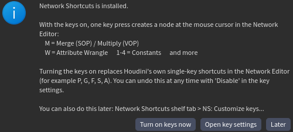
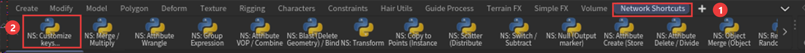
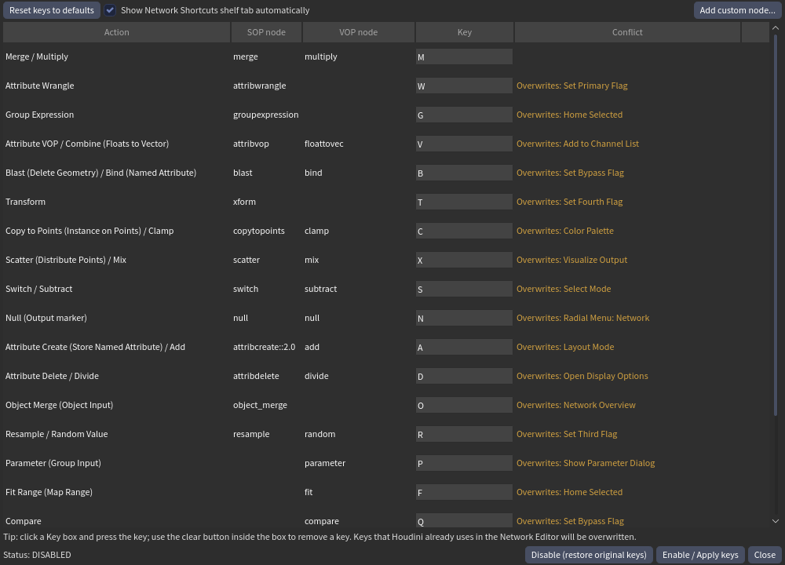

Houdini Network Shortcuts
Press one key, get a node at your mouse cursor in the Houdini Network Editor, like quick-add in Blender Geometry Nodes or Unreal. The same key makes the right node for the network you are in: M = Merge in SOP, Multiply in VOP.
キーを1回押すだけで、Houdini の Network Editor のマウス位置にノードを作成。M は SOP なら Merge、VOP なら Multiply。
Download (zip) / ダウンロード GitHub
Tested on Houdini 22.0.466 (Windows) only. / 動作確認は Houdini 22.0.466 (Windows) のみです。
Install in 3 steps / 3ステップで導入
- Install. Unzip the download and double-click
install.bat(Windows). / zip を展開してinstall.batをダブルクリック。 - Start Houdini and click Turn on keys now in the welcome window. / Houdini を起動し、案内ウィンドウの Turn on keys now をクリック。
- Restart Houdini once. Done. / Houdini を一度だけ再起動。完了です。

Keys / キー一覧(抜粋)
| Key | SOP | VOP |
|---|---|---|
M | Merge | Multiply |
W | Attribute Wrangle | |
V | Attribute VOP | Combine (Floats to Vector) |
1 2 3 4 | Constant Float / Vector2 / 3 / 4 | |
Ctrl+P | Parameter |
21 keys in total. The default keys replace Houdini's own single-key Network Editor shortcuts; "Disable" restores them. / 全21キー。初期のキーは Houdini 標準の単独キーを置き換えます。Disable で元に戻せます。
Change keys, add your own nodes / キー変更・自作ノード
Open the Network Shortcuts shelf tab and click NS: Customize keys.... Change any key, see which Houdini key it would replace, and add your own nodes picked from searchable lists. / Shelf の Network Shortcuts タブで NS: Customize keys... をクリック。キーの変更、競合の確認、自作ノードの追加ができます。

